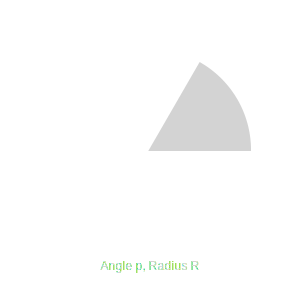
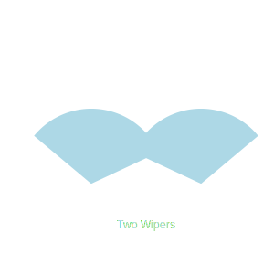
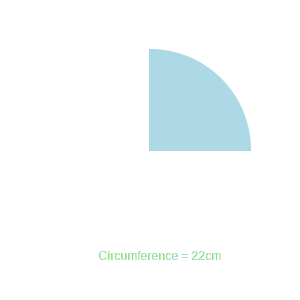
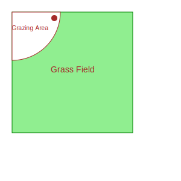
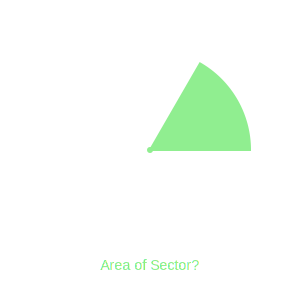
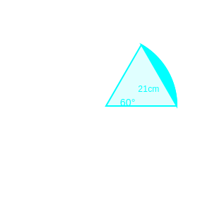

1. Area of a sector of angle p (in degrees) of a circle with radius R is:

(a) (p/180) × 2πR
(b) (p/180) × πR²
(c) (p/360) × 2πR
(d) (p/720) × 2πR²
Answer: (d) (p/720) × 2πR²
Same as (p/360) × πR².
2. If the sum of the circumferences of two circles with radii R₁ and R₂ is equal to the
circumference of a circle of radius R, then:

(a) R₁ + R₂ = R
(b) R₁ + R₂ > R
(c) R₁ + R₂ < R
(d) None of these
Answer: (a) R₁ + R₂ = R
2πR₁ + 2πR₂ = 2πR => R₁ + R₂ = R.
3. If the ratio of the areas of two circles is 4:9, then the ratio of their
circumferences is:

(a) 2:3
(b) 4:9
(c) 3:2
(d) 16:81
Answer: (a) 2:3
A₁/A₂ = r₁²/r₂² = 4/9 => r₁/r₂ = 2/3. C₁/C₂ = r₁/r₂.
4. The area of a circle that can be inscribed in a square of side 6 cm is:

(a) 36π cm²
(b) 18π cm²
(c) 12π cm²
(d) 9π cm²
Answer: (d) 9π cm²
Diameter = Side = 6. Radius = 3. Area = π(3)² = 9π.
5. The perimeter of a sector of a circle of radius 5.2 cm is 16.4 cm. The area of the
sector is:

(a) 31.2 cm²
(b) 15.6 cm²
(c) 16.4 cm²
(d) 18.8 cm²
Answer: (b) 15.6 cm²
Perimeter = 2r + L. 16.4 = 10.4 + L => L = 6. Area = (1/2)Lr = (1/2)(6)(5.2) = 15.6.
6. If the area of a circle is 154 cm², then its perimeter is:
(a) 11 cm
(b) 22 cm
(c) 44 cm
(d) 55 cm
Answer: (c) 44 cm
πr² = 154 => (22/7)r² = 154 => r²=49 => r=7. 2πr = 44.
7. The area of a quadrant of a circle whose circumference is 22 cm is:
(a) 3.5 cm²
(b) 77/8 cm²
(c) 22 cm²
(d) 77/2 cm²
Answer: (b) 77/8 cm²
Solved in Ex 11.1 Q2.
8. Area of the largest triangle that can be inscribed in a semi-circle of radius r is:

(a) r²
(b) 1/2 r²
(c) 2r²
(d) √2r²
Answer: (a) r²
Base = 2r. Height = r. Area = (1/2)(2r)(r) = r².
9. If the perimeter and the area of a circle are numerically equal, then the radius of
the circle is:

(a) 2 units
(b) π units
(c) 4 units
(d) 7 units
Answer: (a) 2 units
2πr = πr² => 2 = r.
10. A cow is tied with a rope of length 14m at the corner of a rectangular field of
dimensions 20m x 16m. The area of the field in which the cow can graze is:
(a) 154 m²
(b) 200 m²
(c) 308 m²
(d) None of these
Answer: (a) 154 m²
Quadrant of circle radius 14.
Area = (1/4)(22/7)(14)(14) = 154.